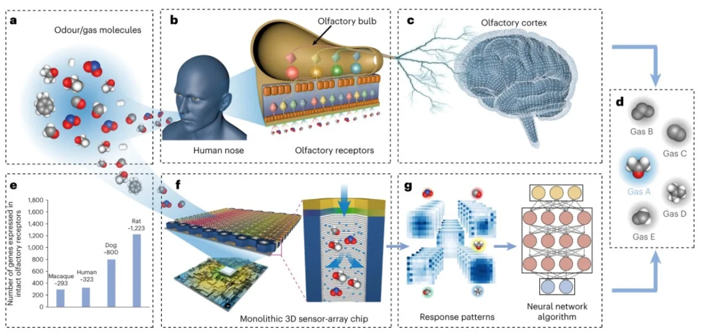

Ce sunt chipsurile olfactive biomimetice?
Dezvoltarea senzorilor olfactivi artificiali a fost o provocare de lungă durată pentru cercetătorii din întreaga lume. Crearea de nasuri electronice (nasuri electronice) care pot discerne în mod eficient amestecurile de odorante complexe, similare sistemului olfactiv biologic, s-a dovedit dificilă din cauza problemelor cu capacitățile de miniaturizare și recunoaștere. Cu toate acestea, o echipă de cercetare condusă de prof. FAN Zhiyong de la Universitatea din Hong Kong de Știință și Tehnologie (HKUST) a făcut o descoperire semnificativă în acest domeniu cu cipurile lor olfactive biomimetice (BOC) nou dezvoltate.
Cipsele olfactive biomimetice, sau BOC, dezvoltate de echipa Prof. Fan sunt o invenție revoluționară în domeniul detectării mirosurilor artificiale. Aceste cipuri mici sunt concepute pentru a imita modul în care oamenii și animalele detectează mirosurile, făcându-le mai precise și mai eficiente decât sistemele anterioare de olfactiv artificiale.
Fiecare BOC conține până la 10,000 de senzori mici de gaz, care sunt aranjați într-un mod care seamănă foarte mult cu sistemul olfactiv biologic. Acest design unic permite cipului să detecteze și să distingă între o mare varietate de mirosuri, chiar și atunci când acestea sunt amestecate împreună în combinații complexe.
Una dintre caracteristicile cheie ale BOC este utilizarea unei compoziții speciale de material care variază de-a lungul cipului. Acest design gradient permite integrarea multor tipuri diferite de senzori pe un singur cip, făcând posibilă detectarea unei game largi de mirosuri, menținând în același timp cipul mic și compact.
Senzorii de gaz utilizați în BOC sunt incredibil de sensibili și pot detecta chiar și cele mai mici urme de diferite gaze și compuși organici volatili (COV). Acești senzori sunt construiți pe un substrat cu pori mici, care oferă o suprafață mare cu care gazele să interacționeze, sporind sensibilitatea și timpul de răspuns al cipului.
Combinând această tehnologie avansată de senzori cu algoritmi de inteligență artificială, BOC poate procesa și interpreta datele de la senzorii de gaz, permițându-i să identifice și să diferențieze diferitele mirosuri cu o acuratețe remarcabilă.
